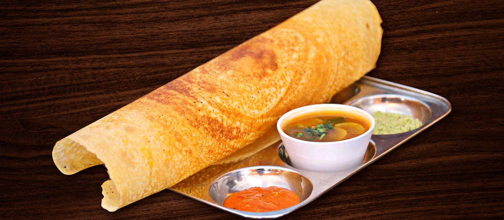

Masala Dhosa

Description
Idlis sambar and dhosa are one of the favoured delicacies of South India. They are rich in
nutrients and they can be alternated in lunch and as well as dinner too. They are items
of the central cuisine, delicious and versatile.
Ingredients
- Fermented Dhosa mixture
- Mustard seeds, Cumin Seeds, Channa Dal, Lemon Juice 1 tbsp each
- One vhopped Onion and 3 boiled mashed potatoes
- Curry Leaves, Ginger chopped, Green Chilli, coriander leaves
- Turmaric powder, Red Chillies powder, Salt, Sugar
Preparation
- Add Mustard seeds, cumin seeds, channa dal, dried chilli and curry leaves in 2tbsp
of heated-up oil and saute well. Add green chilli, onion and ginger and saute.
- Add turmeric powder, salt and mashed potatoes mix well thoroughly. Cookedthe potatoes
well and finish by adding coriander leaves and lemon juice.
- For preparing red garlic sause add roasted channa dal with onion, garlic and gimger
and saute in heated-up oil. Grind the mixture and blend the paste by adding water as needed
- Mix the fermented dhosa with salt and sugar. Heat the griddle , pour the batter
and spread it in a circular motion. Spred the butter and sause over the dhosa.
- Add potatoes masala on one side of the dhosa and roast it for 30 seconds. Fold
it over the empty side and serve the dhosa with hot sambar and coconut chutney.